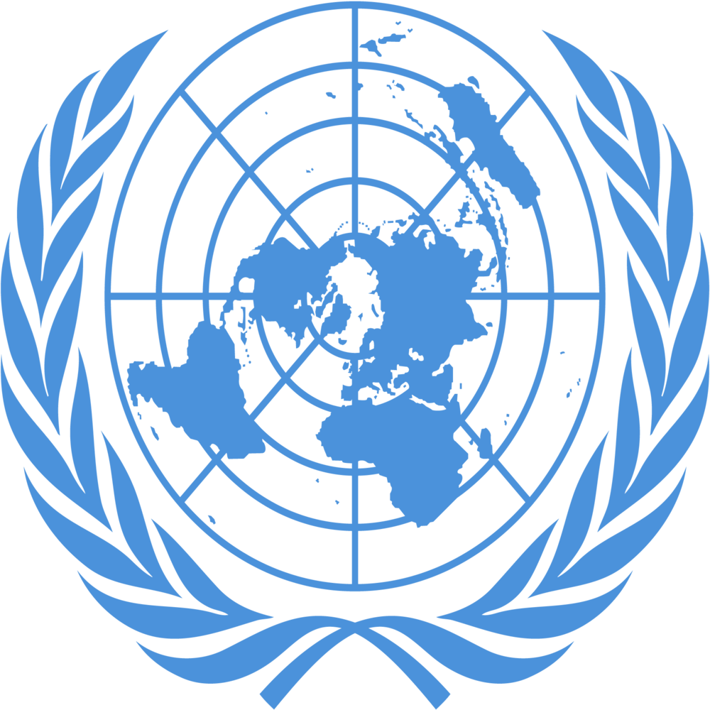
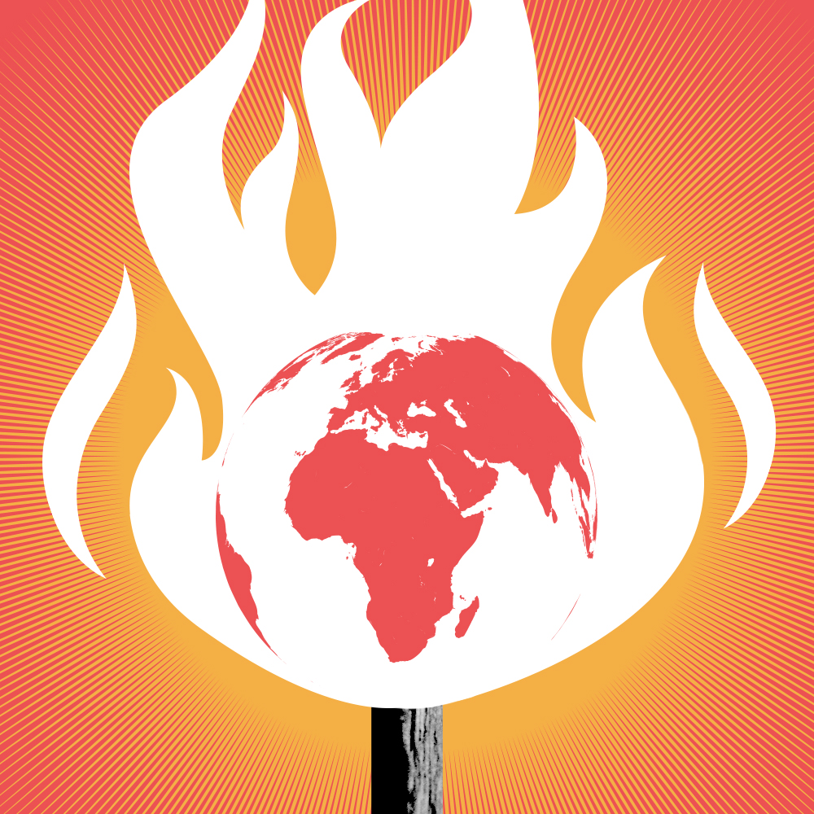

Глобальное потепление
Изменение климата представляет собой наиболее серьезный кризис нашего времени,
и оно происходит еще быстрее, чем мы предполагали. Тем не менее перед лицом этой глобальной угрозы мы отнюдь не бессильны.
Как отметил в сентябре Генеральный секретарь Антониу Гутерриш: «Чрезвычайная ситуация, связанная с изменением климата, — это гонка, в которой мы проигрываем,
но из которой мы еще можем выйти победителями».
Ни один уголок земного шара не застрахован от разрушительных последствий изменения климата.
Повышение температуры является непосредственной причиной деградации окружающей среды, стихийных бедствий, экстремальных погодных явлений,
отсутствия продовольственной безопасности и безопасности водных ресурсов, экономических потрясений, конфликтов и терроризма. Повышается уровень моря,
тают арктические ледники, гибнут коралловые рифы, происходит закисление океана и бушуют лесные пожары. Очевидно, нужен кардинально новый подход.
Поскольку последствия ущерба, наносимого в результате изменения климата, становятся практически необратимыми, настало время для решительных коллективных действий.

Узнайте больше...
{% if button_python%}

Производство электроэнергии:
Значительная доля глобальных выбросов связана с производством электроэнергии и тепла путем сжигания ископаемых видов топлива. Бóльшая часть электроэнергии
по-прежнему производится посредством сжигания угля, нефти или газа, в результате чего образуются углекислый газ и закись азота – мощные парниковые газы, которые покрывают
Землю и задерживают солнечное тепло. Во всем мире чуть более четверти электроэнергии вырабатывается за счет ветра и солнца и поступает из других возобновляемых источников, которые, в отличие от ископаемых видов топлива, практически не выделяют в атмосферу парниковых газов или загрязняющих веществ.
Изготовление товаров:
Предприятия обрабатывающей и других отраслей промышленности производят выбросы, в большинстве случаев являющиеся результатом сжигания ископаемых видов топлива в целях выработки энергии, необходимой для получения цемента, железа, стали,
электронных устройств, пластмасс, одежды и других товаров. При добыче полезных ископаемых
и других промышленных процессах, равно как и при строительстве, также выделяются газы. Машины,
используемые в производственном процессе, зачастую работают на угле, нефти или газе, а некоторые
материалы, такие как пластмассы, производятся из химических веществ, получаемых из ископаемых
видов топлива. Обрабатывающая промышленность является одним из крупнейших источников выбросов парниковых газов в мире.
Вырубка лесов:
В результате вырубки лесов для создания ферм или пастбищ либо по иным причинам образуются выбросы,
поскольку вырубаемые деревья высвобождают накопленный углерод. Ежегодно уничтожается около 12 млн
гектаров леса. Поскольку леса поглощают углекислый газ, их уничтожение также ограничивает способность
природы удерживать выбросы в атмосферу. Обезлесение наряду с сельским хозяйством и другими
изменениями в землепользовании является причиной примерно четверти глобальных выбросов парниковых газов.
Использование транспорта:
Большинство автомобилей, грузовиков, кораблей и самолетов работают на ископаемых видах топлива.
Это делает транспорт одним из главных источников выбросов парниковых газов, особенно выбросов
углекислого газа. Наибольшая их часть приходится на дорожные транспортные средства в связи со
сжиганием продуктов нефтепереработки, таких как бензин, в двигателях внутреннего сгорания. При этом выбросы морских и воздушных судов продолжают расти.
На транспорт приходится почти четверть глобальных выбросов углекислого газа, связанных с энергоснабжением. Существующие тенденции указывают
на вероятность значительного увеличения энергопотребления в транспортном секторе в ближайшие годы.
Производство продуктов питания:
Производство продуктов питания приводит к выбросам углекислого газа,метана и других парниковых газов разными путями, включая вырубку лесов и расчистку земель для ведения сельского хозяйства и выпаса скота, работу пищеварительных систем коров и овец,
производство и применение удобрений и навоза для выращивания сельскохозяйственных культур и использование энергии для эксплуатации сельскохозяйственного
оборудования или рыболовецких судов, обычно работающих на ископаемых видах топлива. Все это делает производство продуктов питания
одним из основных факторов, способствующих изменению климата. Выбросы парниковых газов также
связаны с упаковкой и распространением продуктов питания.
Энергоснабжение зданий:
В мировом масштабе жилые и коммерческие здания потребляют более половины всей электроэнергии. В связи
с продолжающимся использованием угля, нефти и природного газа для целей отопления и охлаждения они
выбрасывают значительные количества парниковых газов. В последние годы повышение спроса на энергию
для отопления и охлаждения с ростом численности владельцев кондиционеров и увеличение потребления
электричества для освещения и обеспечения работы бытовой техники и подключенных
устройств способствовали увеличению выбросов углекислого газа, производимых зданиями и связанных с энергоснабжением.
Слишком интенсивное потребление:
Ваш дом и использование электроэнергии, то, как вы передвигаетесь, то, что вы едите, и количество того, что вы выбрасываете, влияют на выбросы парниковых газов. Это же можно
сказать о потреблении таких товаров, как одежда, электронные устройства и пластмассы. Значительная часть глобальных выбросов парниковых газов связана с частными домохозяйствами.
Наш образ жизни оказывает глубокое воздействие на нашу планету. Самые состоятельные лица несут наибольшую ответственность: на 1 процент самых богатых жителей планеты в
совокупности приходится больше выбросов парниковых газов,чем на 50 процентов беднейшего населения.
На основе различных источников ООН
{% endif %}
{% if button_discord%}

Повышение температур:
С увеличением концентрации парниковых газов растет и глобальная температура земной поверхности.
Последнее десятилетие – 2011–2020 годы – стало самым теплым за всю историю наблюдений.
С 1980-х годов каждое десятилетие было теплее предыдущего. Почти во всех районах суши
наблюдается увеличение количества жарких дней и периодов аномальной жары. Повышение температуры
увеличивает количество заболеваний, связанных с жарой, и затрудняет работу на открытом воздухе.
Природные пожары легче возникают и быстрее распространяются в более жарких условиях. Температура
в Арктике повышалась по крайней мере вдвое быстрее, чем в среднем по миру.
Усиление штормов
Многие регионы столкнулись с увеличением интенсивности и частоты разрушительных штормов.
При повышении температуры испаряется больше влаги, что усиливает ливневые дожди и наводнения,
вызывая более опасные штормы. На частоту и масштабы тропических штормов также влияет потепление
океана. Циклоны, ураганы и тайфуны формируются в теплых водах у поверхности океана. Такие
ураганы нередко разрушают дома и населенные пункты, становясь причиной гибели людей и
огромных экономических потерь.
Усиление засухи:
Изменение климата меняет степень доступности воды, делая ее более дефицитным ресурсом
в растущем числе регионов. Глобальное потепление усугубляет нехватку воды в регионах, и
без того испытывающих ее дефицит, и увеличивает риск сельскохозяйственных засух, влияющих
на урожай, и экологических засух, повышающих уязвимость экосистем. Засухи также могут вызывать
разрушительные песчаные и пыльные бури, способные перемещать миллиарды тонн песка через
континенты. Пустыни расширяются, сокращая площадь земель для выращивания продовольственных
культур. Сегодня многие люди постоянно сталкиваются с угрозой нехватки воды.
Потепление и повышение уровня океана:
Океан поглощает бóльшую часть тепла, образующегося в процессе глобального потепления.
За последние двадцать лет скорость, с которой океан нагревается, сильно возросла на
всех его глубинах. По мере потепления океана его объем увеличивается, поскольку при
нагревании вода расширяется. Таяние ледовых щитов также приводит к повышению уровня моря,
угрожая прибрежным и островным сообществам. Кроме того, океан поглощает из атмосферы углекислый
газ. При этом увеличение количества углекислого газа повышает кислотность океана, что ставит под
угрозу морскую флору и фауну и коралловые рифы.
Исчезновение видов:
Изменение климата создает риски для выживания видов на суше и в океане. Эти риски возрастают
по мере повышения температуры. Мир, положение в котором усугубляется изменением климата,
теряет виды в тысячу раз быстрее, чем когда-либо в письменной истории человечества. Миллион
видов находится под угрозой исчезновения в течение следующих нескольких десятилетий. В число
многочисленных угроз, связанных с изменением климата, входят лесные пожары, экстремальные
погодные условия и инвазивные вредители и заболевания. Некоторые виды смогут сменить место
обитания и выжить, а другие нет.
Нехватка продуктов питания:
В группу причин глобального роста распространенности голода и неполноценного питания входят
климатические изменения и увеличение количества экстремальных погодных явлений. Рыбные ресурсы,
сельскохозяйственные культуры и домашний скот могут быть уничтожены или стать менее продуктивными.
В связи с закислением океана морские ресурсы, обеспечивающие питание для миллиардов людей, находятс
я под угрозой. Изменения снежного и ледяного покрова во многих арктических регионах нарушили
систему снабжения продовольствием, обеспечиваемым за счет пастбищного животноводства, охоты и рыболовства. Тепловой стресс может уменьшать количество воды и пастбищ, что приводит к снижению урожайности сельскохозяйственных культур и негативным образом сказывается на поголовье скота.
Увеличение рисков для здоровья:
Изменение климата – это самая большая угроза для здоровья людей. Его последствия уже
наносят вред здоровью в связи с загрязнением воздуха, распространением заболеваний,
возникновением экстремальных погодных явлений, вынужденным перемещением, оказанием
давления на психику и обострением проблем голода и неполноценного питания в местах,
где люди не могут выращивать продовольственные культуры или обеспечить наличие
достаточного количества пищевых продуктов. Экологические факторы ежегодно уносят
жизни около 13 млн человек. Изменение погодных условий приводит к распространению
заболеваний, а экстремальные погодные явления увеличивают смертность и затрудняют
работу систем здравоохранения.
Нищета и вынужденное перемещение
Изменение климата усиливает факторы, ввергающие людей в нищету и не позволяющие им исправ
ить ситуацию, в которой они оказались. Наводнения могут смести городские трущобы, разрушив
дома и уничтожив источники средств к существованию. Жара может затруднить работу на
открытом воздухе. Нехватка воды может повлиять на урожай. В последние десять лет
(2010–2019 годы) связанные с погодой явления приводили к вынужденному перемещению в
среднем около 23,1 млн человек в год, повышая риск оказаться в нищете для еще большего
числа людей. Большинство беженцев прибывают из самых уязвимых стран, наименее готовых
адаптироваться к последствиям изменения климата.
На основе различных источников ООН
{% endif %}
{% if button_html%}
Правительства, бизнес-круги и представители гражданского общества объединяют усилия в рамках климатических инициатив,
стремясь ускорить принятие мер по противодействию изменению климата.
Эти инициативы, предложенные на проведенном Организацией Объединенных Наций
в 2019 году Саммите по борьбе с изменением климата, направлены на сокращение объема
выбросов, решение ряда важнейших проблем, связанных в том числе с
созданием рабочих мест и обеспечением гендерного равенства, привлечение финансирования,
создание устойчивой инфраструктуры, применение решений, основанных на природных факторах,
а также содействие адаптации и повышению устойчивости к изменению климата.
Координаторская роль Организации Объединенных Наций важна как никогда в целях
побуждения людей к сотрудничеству, решительным действиям и принятию мер,
необходимых для ограничения роста температуры на планете 1,5 градусами Цельсия.
Организация Объединенных Наций также выступает за переход к устойчивой
низкоуглеродной экономике, обеспечивающей социальную справедливость и выгоды
для всех людей.
{% endif %}
{% if button_db%}
Пандемия COVID-19 обнажила последствия, связанные с отсутствием достаточного прогресса в достижении целей в области устойчивого развития и Парижского соглашения об изменении климата. Мы могли бы добиться больших успехов, если бы приложили больше усилий.
Генеральный секретарь Организации Объединенных Наций заявил, что мы должны изменить курс, поскольку иначе мы рискуем упустить момент, когда мы можем избежать «катастрофических последствий для людей и всех природных систем, которые поддерживают нас».
Продолжая борьбу с пандемией, мы можем столкнуться с еще большей по масштабу чрезвычайной климатической ситуацией. Что может один человек или даже страна сделать для того, чтобы переломить эту непростую ситуацию? К счастью, нужные решения действительно существуют!
{% endif %}